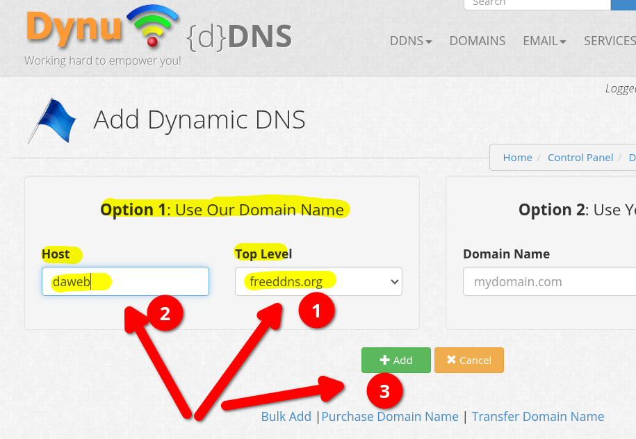

DNS
1. Introducción¶
Objetivo: asociar la IP de una instancia EC2 a un nombre de dominio. Para conseguir un nombre de dominio para su IP sin coste hay varias opciones, entre ellas:
- Dynu: https://www.dynu.com/en-US/
- get.tech
- duckdns: Admite wildcards xxx.midominio.duckdns.org y admite registros tipo TXT. https://duckdns.org
- noip.com: https://www.noip.com/es-MX/free
- FreeDNS: http://freedns.afraid.org
- Nominalia: primer año gratis, pero hay que dar tarjeta https://www.nominalia.com/
- Freenom (parece que no funciona): https://www.freenom.com/
Además en el caso de la instancia AWS del laboratorio habría que resolver el que la IP va cambiando al detener y reiniciar la instancia. Posibles soluciones:
- Asociarla manualmente de nuevo cuando cambie
- Usar una IP Elástica de AWS (tiene coste en el crédito de AWS)
- DNS dinámico (DDNS): instalar un script o aplicación en la instancia EC2 que detecte el cambio en la IP pública y actualize el DNS.
De entre las opciones posible se explican dos de ellas: Dynu y get.tech, esta última usando las ventajas del Student Pack de GitHub-
2. Dominio en Dynu¶
2.1. Alta¶
Puede darse de alta en https://www.dynu.com/en-US/
2.2. Dominio DDNS¶
Puede añadir un dominio en el menú DDNS, opción SIGN UP. Este debería ser el enlace:
https://www.dynu.com/en-US/ControlPanel/AddDDNS
Debe usar la opción Option 1: Use Our Domain Name, seleccionar uno de sus dominios en el desplegable y elegir un Nombre de Host. Luego pulsar el botón Add

Una vez creado le muestra el dominio y observe que de formaautomática le ha asignado una IP a ese dominio. Esa IP es la del equipo del que se está conectando, y lo habitual es que sea la IP pública del router de la red desde la que se esté conectando en ese momento.

Importante:
- Esa IPv4 Address será la que deberá sustitutir por la IP Elásctica de su instancia EC2.
- Observe que tiene activo por defecto las Wirldcard IPv4 alias, por lo que cualquier nombre que termine en
.daweb.freedns.orgcomowhoami.daweb.freedns.orgowww.daweb.freedns.orgresuelve la misma IP. - Puede acceder a la gestión en detalle tiene a la derecha la opción DNS Records.
3. TODO: dominio en .tech¶
El dominio .tech es gratuito usando el Developer Pack Student de GitHub. En este caso tenga en cuenta que:
- Importante: debe realizar el alta desde esta dirección: https://get.tech/github-student-developer-pack.
- Buscar y seleccionar un dominio libre
- Al ordenar el pago hay un botón para identificarse con su cuenta de GitHub (la que esté asociada a los beneficios del github student developer pack). Al usar esa opción el coste del dominio debe ser gratuito durante un año.
- Para gestionar el dominio acceda a http://controlpanel.tech/customer.
4. Otros servicios DNS¶
4.1. duckdns¶
- Puede hacer el alta con su cuenta de Github o Google
- Admite registros wildcard como
xxxx.midominio.duckdns.org(puede ser útil por ejemplo para la práctica de un proxy inverso como traefik). - Admite registros del tipo TXT
- Para asociar la IP a u nombre de dominio:
- Se puede especificar manualmente en su web
- Se puede auto detectar desde su página web (pero detecta el equipo desde donde se accede)
- Se puede hacer una actualización con peticiones a su API HTTP desde el equipo destino. Más detalles en este enlace.
4.2. noip¶
- Sólo admite un registro para un host:
midominio.ddns.net - Se puede asociar la IP manualmente en su web o instalar cliente en el equipo destino.
5. Enlaces¶
- Duck DNS: https://www.duckdns.org/
- noip DNS: https://my.noip.com/dynamic-dns/duc
- Otros:
- Best Free Dynamic DNS Services: https://www.gnutomorrow.com/best-free-dynamic-dns-services/
- Freedns https://freedns.afraid.org/ y Dynamic DNS: https://freedns.afraid.org/dynamic/
- Namecheap: https://www.namecheap.com/ y Nc.me: Namecheap is giving university students a free bundle to kickstart their online presence.: https://nc.me/
- ¿Qué son las direcciones IP elásticas de AWS y qué hacen? https://es.linux-console.net/?p=7127#google_vignette
- Configurar DNS dinámico en la instancia de Amazon Linux - Amazon Elastic Compute Cloud https://docs.aws.amazon.com/es_es/AWSEC2/latest/UserGuide/dynamic-dns.html
Ejercicio práctico¶
En este ejemplo se usa por ejemplo la AMI Linux de AWS de 2023 (basada en Fedora).
- Crear una instancia EC2 Amazon Linux 2023
-
Instalar
nginxen esa instancia[ec2-user@ip-172-31-18-67 ~]$ sudo dnf install -y nginx Last metadata expiration check: 0:00:49 ago on Sat Oct 28 13:13:01 2023. Dependencies resolved. ... Complete! [ec2-user@ip-172-31-18-67 ~]$ -
Iniciar el servidor
[ec2-user@ip-172-31-18-67 ~]$ sudo systemctl start nginx [ec2-user@ip-172-31-18-67 ~]$ sudo systemctl status nginx ● nginx.service - The nginx HTTP and reverse proxy server Loaded: loaded (/usr/lib/systemd/system/nginx.service; disabled; preset: disabled) Active: active (running) since Sat 2023-10-28 13:15:30 UTC; 1s ago ... Oct 28 13:15:30 ip-172-31-18-67.ec2.internal systemd[1]: Started nginx.service - The nginx HTTP and reverse proxy server. [ec2-user@ip-172-31-18-67 ~]$ -
Probar servidor en local con
curl[ec2-user@ip-172-31-18-67 ~]$ curl localhost <!DOCTYPE html> <html> <head> .... <h1>Welcome to nginx!</h1> ... <p><em>Thank you for using nginx.</em></p> </body> </html> [ec2-user@ip-172-31-18-67 ~]$ -
Habilitar arranque en reinicio:
[ec2-user@ip-172-31-18-67 ~]$ sudo systemctl enable nginx Created symlink /etc/systemd/system/multi-user.target.wants/nginx.service → /usr/lib/systemd/system/nginx.service. [ec2-user@ip-172-31-18-67 ~]$ sudo systemctl status nginx ● nginx.service - The nginx HTTP and reverse proxy server Loaded: loaded (/usr/lib/systemd/system/nginx.service; enabled; preset: disabled) Active: active (running) since Sat 2023-10-28 13:15:30 UTC; 7min ago ... Oct 28 13:15:30 ip-172-31-18-67.ec2.internal systemd[1]: Started nginx.service - The nginx HTTP and reverse proxy server. [ec2-user@ip-172-31-18-67 ~]$ -
Anotar la IP pública de la instancia EC2 y crear registro DNS.
-
Esperar a las actualizaciones DNS y desde un equipo probar el nombre de dominio
clases@d12:~$ curl www.midominio.duckdns.org <!DOCTYPE html> <html> <head> ... <h1>Welcome to nginx!</h1> .... <p><em>Thank you for using nginx.</em></p> </body> </html> clases@d12:~$
Aviso: al reiniciar la EC2 cambia la IP.
Ayuda: Para instalar
nginxdirectamente al crear la instancia (o desde plantilla de instancia)#!/bin/bash sudo dnf install -y nginx sudo systemctl enable nginx sudo systemctl start nginx